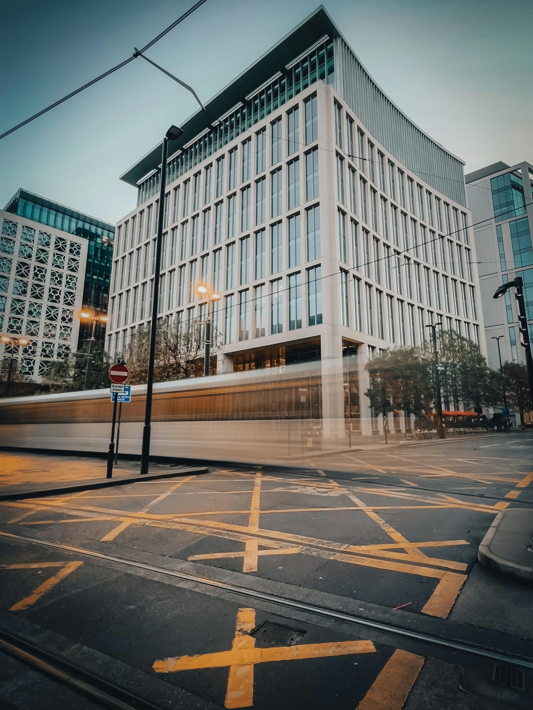

Wann Blog memang beda dan satu tujuan
Salah satu pemilik klub, Sir Jim Ratcliffe, baru-baru ini menguraikan preferensinya untuk mengganti Old Trafford dengan stadion baru yang dapat digunakan sebagai venue nasional. Dewan menyambut baik usulan tersebut sebagai bagian dari rencananya untuk meregenerasi kawasan Dermaga Trafford yang lebih luas. Lord Coe berkata: "Saya telah melihat potensi stadion untuk menjadi titik fokus bagi komunitas yang kuat dan katalis bagi pembangunan sosial dan ekonomi.
Ambisi gugus tugas gabungan pengembangan Old Trafford ini adalah agar United memiliki salah satu stadion terbaik di dunia. Sengaja tidak ada perwakilan klub dalam satuan tugas, yang dirancang untuk memberikan saran langsung namun perwakilan klub akan menjadi bagian dari pertemuan tersebut. BBC Sport diberitahu bahwa keluarga Glazer sepenuhnya mendukung rencana tersebut. Jika pembangunan baru tidak memungkinkan, klub akan beralih ke opsi lain. Meskipun Stadion London mengalami kerugian jutaan orang, regenerasi di sekitar Taman Olimpiade adalah sesuatu yang patut dicermati, dengan Lord Coe membawa dimensi internasional ke dalamnya.
Dengan tim jurnalis yang berpengalaman dan profesional, kami berusaha memberikan liputan yang mendalam dan mendetail tentang berbagai peristiwa penting di seluruh dunia.